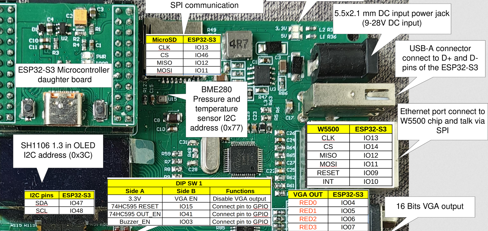
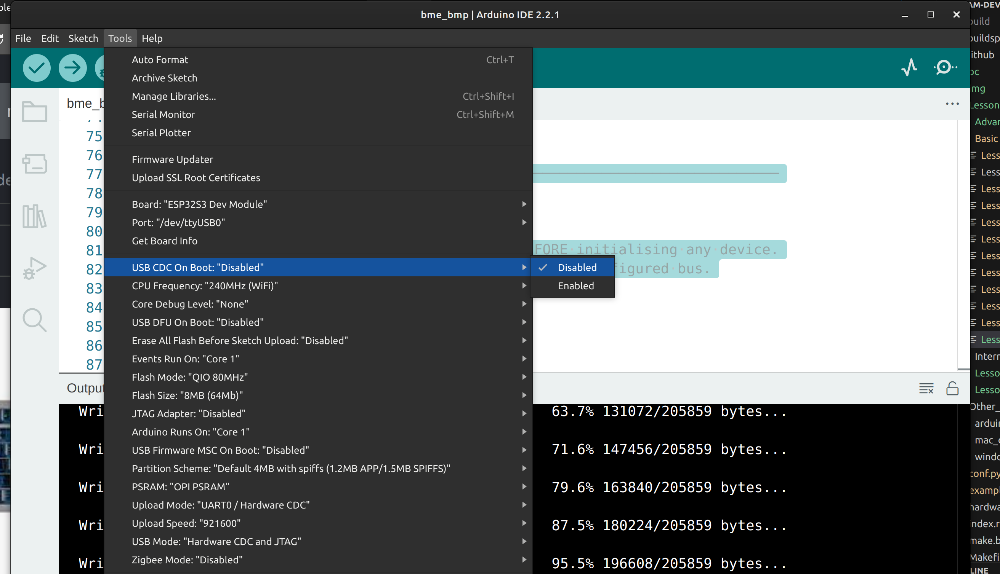
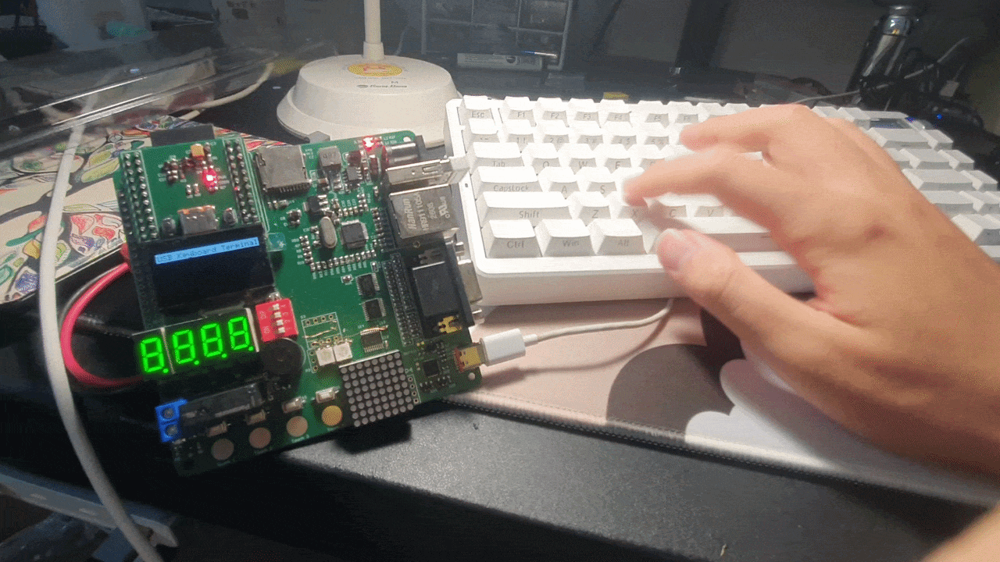

Project 11 : USB Keyboard Input Displayed on the OLED Screen#
Introduction#
In this project, you will explore one of the most powerful — and least well-known — features of the ESP32-S3: its built-in USB On-The-Go (OTG) controller operating in host mode. Instead of the ESP32-S3 acting as a USB device (as it does when you plug it into your computer for programming), it will become the USB host — the controller — allowing you to plug in a standard USB keyboard and read every keystroke.
Each key pressed on the keyboard will be decoded and displayed on the on-board SH1106 OLED screen, building a simple text terminal.
By the end of this tutorial, you will know how to:
Understand the difference between USB device mode and USB host mode.
Configure the Arduino IDE correctly to enable USB host functionality.
Use the
EspUsbHostlibrary to receive keyboard events via a callback.Decode HID keycodes into printable ASCII characters.
Drive the SH1106 OLED display with the U8g2 library using custom I²C pins.
Safely share data between a USB background task and the main loop using a mutex.
Requirements#
Before starting, make sure you have the following:
The STEAM development kit or The STEAM standalone microcontroller board
A standard USB keyboard (USB HID Boot Protocol compatible — virtually all modern keyboards qualify)
A USB Type-A to Type-C OTG cable, or a USB hub with Type-C input, to connect the keyboard to the board’s USB port
Arduino IDE with ESP32 toolchain installed (esp32 board package version 3.0 or later)
The SH1106 OLED display is already integrated on the STEAM development board. No additional components are needed.

The interfacing description of the microcontroller board#
Pin assignments used in this project:
Signal |
ESP32-S3 GPIO |
Description |
|---|---|---|
OLED SCL |
IO48 |
I²C clock line to SH1106 |
OLED SDA |
IO47 |
I²C data line to SH1106 |
USB D+ / D− |
IO19 / IO20 |
Built-in USB OTG data lines (fixed, internal) |
Note
The USB D+ and D− lines (IO19 and IO20) are connected internally to the USB connector on the STEAM board. You do not wire these manually — they are used automatically when you plug a keyboard into the board’s USB port.
Background: Key Concepts#
USB Device Mode vs. USB Host Mode#
Every USB connection has two roles: a host (the controller that manages the bus and enumerates devices) and a device (the peripheral being controlled). In everyday use, your computer is the host and your keyboard, mouse, or ESP32 board is the device.
The ESP32-S3’s USB OTG controller can operate in either role:
Device mode (default) — the ESP32-S3 appears to your computer as a serial port, HID device, or similar peripheral. This is the mode used for programming and Serial Monitor.
Host mode — the ESP32-S3 takes control of the USB bus and can talk to keyboards, mice, USB storage, and other peripherals.
Important
The USB OTG peripheral can only be in one mode at a time. When host mode is active, the same USB port cannot be used for programming or Serial Monitor. You must upload the sketch before switching to host mode and use the board’s UART port (via a USB-to-serial adapter on TX0/RX0) if you need to debug at runtime.
The HID Protocol and Boot Protocol#
USB keyboards speak the HID (Human Interface Device) protocol. When a key is pressed, the keyboard sends a small data packet called a HID report containing up to six simultaneous keycodes and a modifier byte (Shift, Ctrl, Alt, etc.).
The Boot Protocol is a simplified, standardised subset of HID that every keyboard is required to support. It uses a fixed 8-byte report format that any host can parse without reading complex HID descriptors. The EspUsbHost library targets the Boot Protocol, which means it works reliably with virtually any USB keyboard.
The EspUsbHost Library#
EspUsbHost (by Masayuki Tanaka) wraps Espressif’s ESP-IDF USB host stack in a clean, Arduino-friendly callback API. The library runs the entire USB host task in a background FreeRTOS thread, so your loop() function is completely free. You simply register a callback in setup(), call usb.begin(), and the library delivers decoded keyboard events — including the ASCII character, raw HID keycode, and modifier flags — directly to your function whenever a key is pressed or released.
The SH1106 OLED and U8g2#
The SH1106 is a 128×64-pixel monochrome OLED controller. It is closely related to the popular SSD1306 but uses a 132-pixel-wide internal frame buffer with a 2-pixel horizontal offset; using an SSD1306-specific library on an SH1106 display produces a shifted image. U8g2 natively supports the SH1106 and handles the offset automatically.
U8g2’s full-frame-buffer mode (_F_ in the constructor name) stores the entire 128×64 bitmap in RAM and sends it to the display in one call to sendBuffer(). This gives flicker-free updates but uses approximately 1 KB of RAM — well within the ESP32-S3’s 512 KB.
The STEAM board’s SH1106 is wired to non-default I²C pins (IO47/IO48). U8g2’s hardware I²C constructor accepts explicit SCL and SDA pin numbers as its third and fourth arguments, so no manual Wire.begin() is needed.
Required Libraries#
Install both libraries through the Arduino Library Manager (Tools → Manage Libraries):
Library |
Search term in Library Manager |
|---|---|
EspUsbHost |
|
U8g2 |
|
Note
EspUsbHost version 2.x uses a different API from version 1.x. This lesson uses the version 2.x callback API (usb.onKeyboard(...)). If you see errors about virtual functions or inheritance, check that you have version 2.x installed.
Critical Arduino IDE Settings#
Before writing or uploading any code, you must configure two settings in the Arduino IDE. These settings tell the compiler how the USB peripheral should be used at boot, and they are not stored in the sketch — they are board-specific build options.
Go to Tools and set:
Setting |
Required Value |
Why |
|---|---|---|
USB CDC On Boot |
Disabled |
Frees the USB OTG peripheral for host mode. If Enabled, the USB port is claimed by the CDC serial driver and the keyboard will never enumerate. |
USB Mode |
Hardware CDC and JTAG (or leave default) |
Ensures UART0 (TX0/RX0) is used for upload and Serial Monitor. |
Upload Mode |
UART0 / Hardware CDC |
Upload proceeds over the UART port, not the OTG port. |
Warning
If USB CDC on Boot is set to Enabled when this sketch runs, the keyboard will not be detected and no characters will appear on the display. Always verify this setting before uploading.

Setting “USB CDC On Boot” to Disabled in the Arduino IDE Tools menu#
Writing the Program#
Create a new sketch in the Arduino IDE and enter the following code:
#include <Wire.h>
#include <U8g2lib.h>
#include "EspUsbHost.h"
// ── Pin definitions ────────────────────────────────────────────────────────
#define OLED_SCL 48
#define OLED_SDA 47
// ── Display: SH1106 128×64, full frame buffer, hardware I²C ───────────────
// Constructor argument order: rotation, reset pin, SCL pin, SDA pin
U8G2_SH1106_128X64_NONAME_F_HW_I2C display(
U8G2_R0, // No rotation
U8X8_PIN_NONE, // No hardware reset pin
OLED_SCL, // IO48
OLED_SDA // IO47
);
// ── USB host ───────────────────────────────────────────────────────────────
EspUsbHost usb;
// ── Shared state (written by USB task, read by main loop) ──────────────────
// Protected by a FreeRTOS mutex to avoid race conditions.
static SemaphoreHandle_t bufMutex;
#define MAX_LINE_CHARS 21 // 128px / ~6px per char at font size 6×10
#define MAX_LINES 5 // 5 usable text rows on a 64px display
static String lines[MAX_LINES]; // Ring buffer of text lines
static int currentLine = 0; // Which line is being typed into
static bool displayDirty = false; // True when the display needs refresh
// ── Helper: advance to the next line (like pressing Enter) ────────────────
static void newLine() {
currentLine = (currentLine + 1) % MAX_LINES;
lines[currentLine] = ""; // Clear the new current line
}
// ── USB keyboard callback ─────────────────────────────────────────────────
// Called from the EspUsbHost FreeRTOS task on every key event.
// Keep this function fast — do not call display functions here.
void onKeyboardEvent(const EspUsbHostKeyboardEvent &event) {
if (!event.pressed) return; // Ignore key-release events
xSemaphoreTake(bufMutex, portMAX_DELAY);
if (event.keycode == 0x28 || event.keycode == 0x58) {
// Enter / Numpad Enter → move to the next line
newLine();
} else if (event.keycode == 0x2A) {
// Backspace → remove last character from current line
if (lines[currentLine].length() > 0) {
lines[currentLine].remove(lines[currentLine].length() - 1);
} else if (currentLine != 0) {
// Line is empty — go back to the previous line
lines[currentLine] = "";
currentLine = (currentLine + MAX_LINES - 1) % MAX_LINES;
}
} else if (event.ascii >= 0x20 && event.ascii <= 0x7E) {
// Printable ASCII character
if ((int)lines[currentLine].length() >= MAX_LINE_CHARS) {
// Current line is full — auto-wrap to the next
newLine();
}
lines[currentLine] += (char)event.ascii;
}
// Non-printable keycodes (function keys, arrows, etc.) are silently ignored.
displayDirty = true;
xSemaphoreGive(bufMutex);
}
// ── Helper: render all lines to the display ───────────────────────────────
void refreshDisplay() {
display.clearBuffer();
display.setFont(u8g2_font_6x10_tr); // 6px wide, 10px tall — fits 21 chars
// Draw a header bar
display.setDrawColor(1);
display.drawBox(0, 0, 128, 12);
display.setDrawColor(0);
display.drawStr(2, 10, "USB Keyboard Terminal");
display.setDrawColor(1);
// Draw text lines, starting from the oldest visible line.
// The ring buffer holds MAX_LINES entries; we display them top to bottom.
int startLine = (currentLine + 1) % MAX_LINES; // Oldest line
for (int i = 0; i < MAX_LINES; i++) {
int idx = (startLine + i) % MAX_LINES;
int y = 24 + i * 10; // 12px header + 2px gap + 10px per row
if (i == (MAX_LINES - 1)) {
// Highlight the active (current) line with a cursor character
String cursorLine = lines[currentLine] + "_";
display.drawStr(0, y, cursorLine.c_str());
} else {
display.drawStr(0, y, lines[idx].c_str());
}
}
display.sendBuffer();
}
// ── Setup ──────────────────────────────────────────────────────────────────
void setup() {
// Initialise I²C display
display.begin();
display.setFont(u8g2_font_6x10_tr);
display.clearBuffer();
display.drawStr(10, 30, "Plug in keyboard...");
display.sendBuffer();
// Initialise shared state
for (int i = 0; i < MAX_LINES; i++) lines[i] = "";
bufMutex = xSemaphoreCreateMutex();
// Register the keyboard callback and start the USB host stack
usb.onKeyboard(onKeyboardEvent);
if (!usb.begin()) {
// If begin() fails, show an error and halt
display.clearBuffer();
display.drawStr(0, 20, "USB Host failed!");
display.drawStr(0, 34, "Check CDC setting");
display.sendBuffer();
while (true) { vTaskDelay(pdMS_TO_TICKS(1000)); }
}
}
// ── Loop ───────────────────────────────────────────────────────────────────
// The USB host task runs in the background. This loop only updates the
// display when the keyboard callback has flagged new data.
void loop() {
if (displayDirty) {
xSemaphoreTake(bufMutex, portMAX_DELAY);
displayDirty = false;
refreshDisplay();
xSemaphoreGive(bufMutex);
}
vTaskDelay(pdMS_TO_TICKS(30)); // ~33 fps ceiling; yields to other tasks
}
Set the IDE options first — before doing anything else, go to Tools and confirm
USB CDC On Bootis Disabled andUpload Modeis UART0 / Hardware CDC. Uploading with the wrong settings is the most common cause of failure.Connect the board to your computer using the USB cable (the programming/UART port, not the OTG port if your board has two).
Select ESP32S3 Dev Module from Tools → Board → esp32.
Select the correct serial port from Tools → Port.
Click the Upload button and wait for completion.
Disconnect the programming cable from the computer (or the board, depending on your setup).
Power the board via USB power supply or battery.
Plug the USB keyboard into the board’s USB OTG port using a USB-A to USB-C OTG cable.
The OLED display will show “Plug in keyboard…” until the keyboard is detected, then switch to the terminal view.
After powering the board with the keyboard connected:
The OLED displays a header bar reading “USB Keyboard Terminal” and a blinking cursor
_on the first text line.Pressing any alphanumeric key, punctuation, or space shows the character immediately on the display.
Pressing Enter moves the cursor to the next line.
Pressing Backspace removes the last character. If the current line is empty, it moves back to the previous line.
When a line fills up (21 characters), text wraps automatically to the next line.
After five lines are filled, older lines scroll off the top as new lines are added (ring buffer behaviour).
Modifier keys (Shift, Ctrl, Alt), function keys, and arrow keys produce no visible output — they are silently ignored.
Note
Shift is fully handled by the EspUsbHost library: pressing Shift + a delivers an uppercase 'A' in event.ascii automatically. You do not need to implement shift-state logic yourself.

Display Initialisation
The U8g2 constructor specifies the SH1106 driver, 128×64 resolution, full frame buffer (_F_), and hardware I²C (_HW_I2C). The third and fourth arguments override the default I²C pins with IO48 (SCL) and IO47 (SDA):
U8G2_SH1106_128X64_NONAME_F_HW_I2C display(
U8G2_R0, U8X8_PIN_NONE, OLED_SCL, OLED_SDA);
display.begin() initialises the I²C bus and sends the SH1106 power-on sequence. After that, drawing calls write into an in-RAM buffer; display.sendBuffer() transfers the entire buffer to the display in a single I²C burst.
The Mutex
The USB host library runs its event loop in a separate FreeRTOS task (on a different CPU core). The keyboard callback onKeyboardEvent() is therefore called from that task, not from the main Arduino task. If both tasks write to the lines[] array at the same time, data corruption occurs.
A FreeRTOS mutex (xSemaphoreCreateMutex()) prevents this. Before reading or writing shared data, both the callback and the main loop call xSemaphoreTake() to lock the mutex, and xSemaphoreGive() to release it. Only one task can hold the mutex at a time, so concurrent access is impossible.
xSemaphoreTake(bufMutex, portMAX_DELAY);
// ... read or write shared data safely ...
xSemaphoreGive(bufMutex);
The Keyboard Callback
usb.onKeyboard() registers a function that receives an EspUsbHostKeyboardEvent struct on every key press or release. The struct contains:
Field |
Description |
|---|---|
|
|
|
Raw HID keycode (e.g., |
|
Decoded ASCII character, including Shift state (0 if non-printable) |
|
Bitmask for Shift, Ctrl, Alt, GUI keys |
The callback ignores release events, checks for Enter and Backspace by raw keycode, and for all other keys appends event.ascii to the current line if it is a printable character (ASCII 0x20–0x7E).
The Ring Buffer
The five text lines are stored in a fixed-size array indexed by currentLine. When newLine() is called:
currentLine = (currentLine + 1) % MAX_LINES;
lines[currentLine] = "";
The modulo wraps the index back to zero after it reaches MAX_LINES, overwriting the oldest line. The refreshDisplay() function computes the oldest line as (currentLine + 1) % MAX_LINES and renders them top to bottom, with the current (newest) line at the bottom highlighted with a _ cursor.
The Display Update
The main loop() checks displayDirty (set to true by the callback when data changes) and only calls refreshDisplay() when there is something new to show. The vTaskDelay() at the end yields the main task to the scheduler, keeping CPU usage low between keystrokes.
Try the following modifications to deepen your understanding.
Show the raw HID keycode for non-printable keys so you can see what special keys produce:
} else { // In the 'else' branch after the printable ASCII check: char buf[8]; snprintf(buf, sizeof(buf), "[%02X]", event.keycode); lines[currentLine] += buf; }
Press F1, the arrow keys, or Page Up to see their keycodes displayed as
[3A],[4F], etc.Respond to the Escape key (keycode
0x29) by clearing all lines:} else if (event.keycode == 0x29) { for (int i = 0; i < MAX_LINES; i++) lines[i] = ""; currentLine = 0;
Change the font for larger or smaller text. U8g2 includes dozens of built-in fonts:
display.setFont(u8g2_font_ncenB08_tr); // Serif, 8px — fewer chars per line display.setFont(u8g2_font_5x7_tr); // Compact, fits 25 chars per line display.setFont(u8g2_font_profont22_tr); // Large — 5 chars per line, 2 rows
Remember to recalculate
MAX_LINE_CHARSandMAX_LINESwhen you change the font size.display.getMaxCharWidth()anddisplay.getMaxCharHeight()report the metrics for the currently selected font.Add a character and line counter in the header bar:
char hdr[22]; snprintf(hdr, sizeof(hdr), "Terminal L%d C%d", currentLine + 1, (int)lines[currentLine].length()); display.drawStr(2, 10, hdr);
Detect the Caps Lock keycode (
0x39) and toggle acapsLockboolean. Use it to draw a small[CAP]indicator in the header when active.
Troubleshooting#
Symptom |
What to check |
|---|---|
OLED shows “Plug in keyboard…” but nothing happens when keys are pressed |
Confirm |
|
The USB OTG peripheral is already in use by CDC. Set |
OLED remains completely blank |
Check I²C wiring. Verify SCL=IO48 and SDA=IO47. Run an I²C scanner sketch to confirm the SH1106 is visible at address 0x3C. |
Display shows but characters are shifted 2 pixels to the side |
You are using an SSD1306 driver instead of the SH1106 driver. Confirm the constructor name contains |
Only the first character of each key press appears; holding a key does not repeat |
Expected with this code. Key repeat requires detecting held keys via a timer. See the Experiment section for ideas. |
Some keys produce |
The keyboard may be sending a report the library cannot decode. Try a different keyboard. Most modern USB keyboards work, but some gaming keyboards with non-standard descriptors may require the full HID Report Protocol instead of Boot Protocol. |
Upload fails after changing |
Confirm |
Summary#
In this tutorial, you used the ESP32-S3’s built-in USB OTG controller in host mode to receive input from a standard USB keyboard and display each keystroke on an SH1106 OLED screen.
Key concepts covered include:
The distinction between USB device mode and USB host mode, and why they cannot coexist on the same port.
The mandatory Arduino IDE setting: USB CDC on Boot → Disabled.
Using the
EspUsbHostlibrary’s callback-based API to receive keyboard events from a background FreeRTOS task without any polling inloop().Interpreting
EspUsbHostKeyboardEventfields:pressed,keycode,ascii, andmodifiers.Initialising the U8g2 library for the SH1106 with non-default I²C pins.
Using a FreeRTOS mutex to safely share a text buffer between the USB task and the main loop.
Implementing a ring buffer of text lines for scrolling terminal behaviour.
This project demonstrates a complete pipeline from physical hardware input (USB keyboard) through protocol decoding (HID Boot Protocol), inter-task communication (FreeRTOS mutex), and graphical output (OLED display) — a pattern common in embedded UI and data-entry applications.